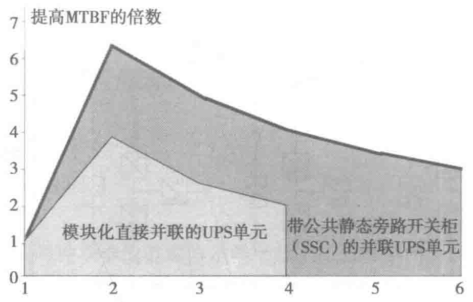
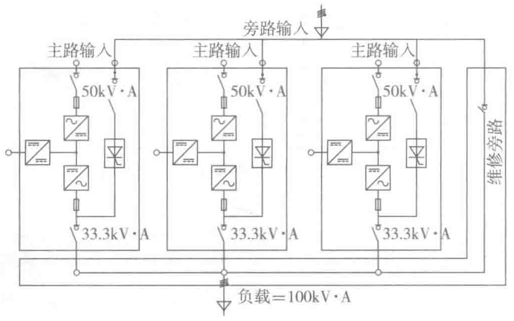

需要N个UPS单元来给负载供电。这种解决方案确保了给负载提供供电的安全性，即使一个或两个UPS单元发生了故障或需要维护时也是如此。
最佳的冗余配置：当采用N+1冗余时，由两个UPS单元组成的系统MTBF达到最大值（见图3-18），这是由于随着并联UPS单元数量的增加，冗余系统的监视和负载电流的分配变得更加复杂化了。

例如，考虑一个额定功率为100kV·A的重要负载，2+1冗余（见图3-19）：如果失去了冗余，2个UPS单元必须能够完全为负载供电。因此，每个UPS单元的额定功率为50kV·A；正常情况下，3个UPS单元均分100kV·A的负载，即每个单元提供33.3kV·A；这3个UPS单元正常运行时每台所带的负载率为33.3/50＝66.6%；每个单元都有一个静态旁路，如果需要切换到旁路时，切换的控制逻辑是3个UPS单元同时切换到3个静态旁路。

失去冗余：其中一台UPS单元故障停机，剩下的两个单元满载运行；可以通过开关隔离故障的UPS单元，进行维修维护（见图3-20）。